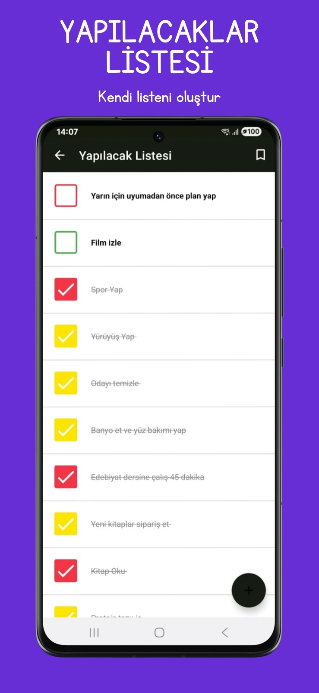
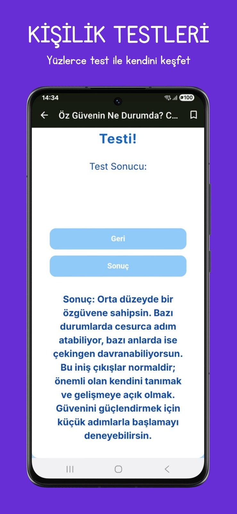
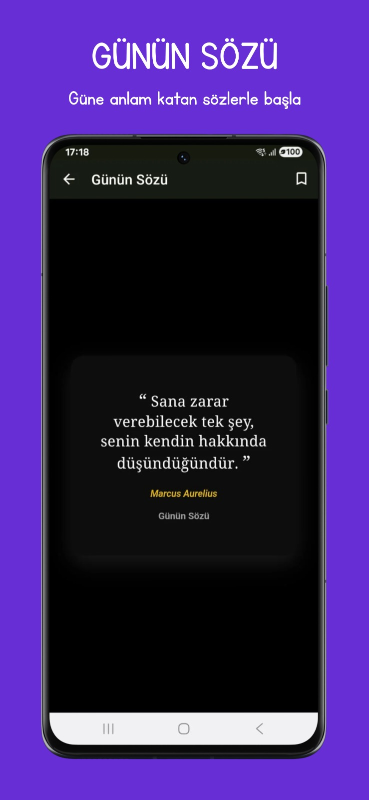
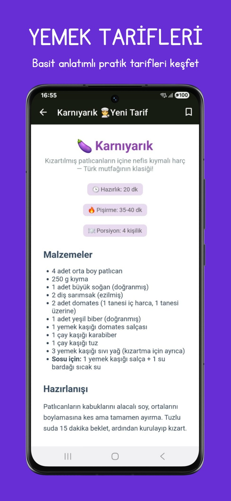
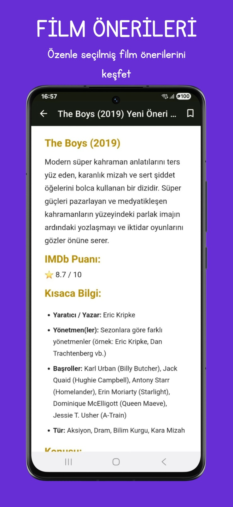
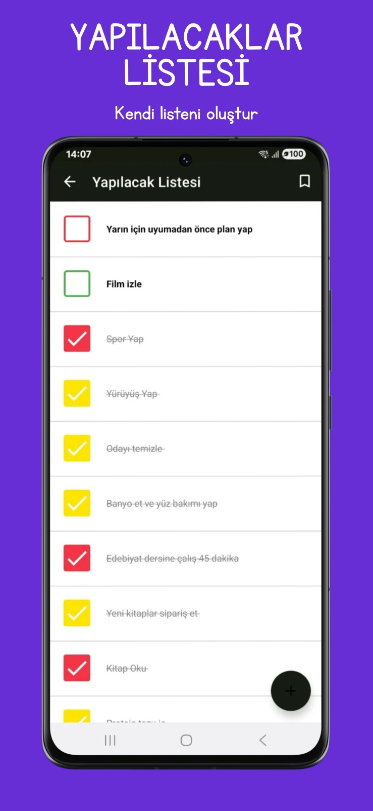
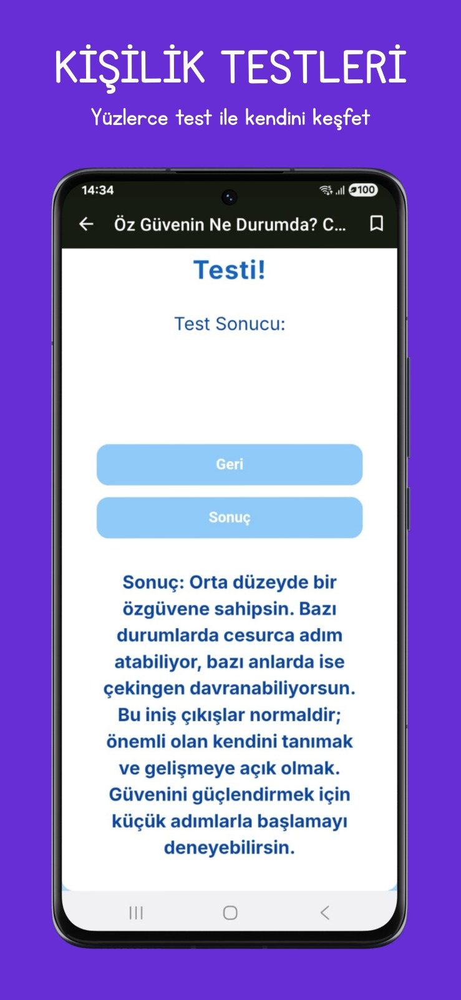
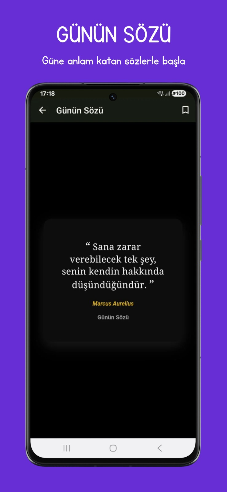
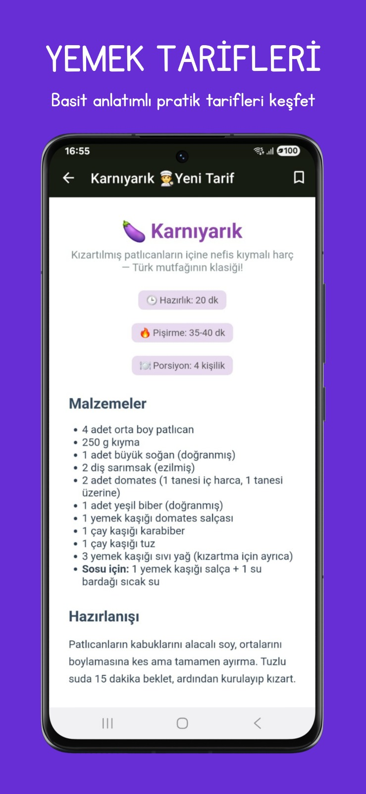
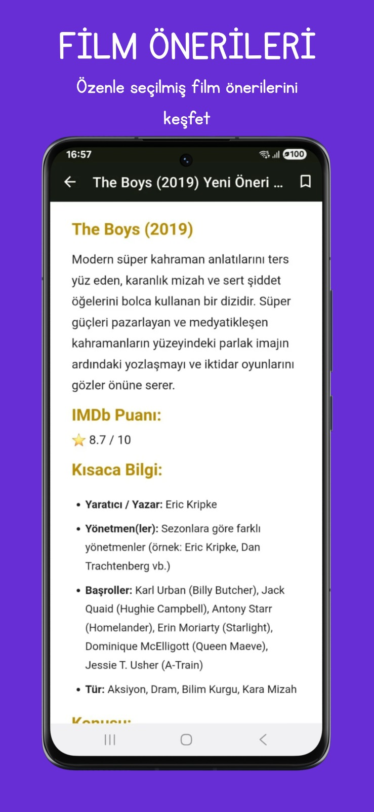

İyi Yol Akademi gerçekten sadece bir uygulama mı
İyi Yol Akademi gerçekten sadece bir uygulama mı, yoksa arkasında çok daha derin bir amacı mı var?
Yazar • Girişimci • İyi Yol Akademi kurucusu
Berke Deniz Yüksekdağ, Türk yazar ve girişimcidir. “Hayat Üzerine Sohbetler” ve “Karanlığın İçinden Aydınlığa” kitaplarının yazarıdır. Ayrıca davet üzerine iki farklı derleme kitap projesinde yer almıştır. Kişisel gelişim, düşünce sistemleri ve bilinçli yaşam üzerine üretimler yapmaktadır. Aynı zamanda çok yönlü bir kişisel gelişim platformu olan İyi Yol Akademi mobil uygulamasının kurucusu ve geliştiricisidir. Bu web sitesi, Berke Deniz Yüksekdağ’a ait projeleri, yazıları ve çalışmaları resmi olarak yayınlamak amacıyla oluşturulmuştur.

Projeler
İyi Yol Akademi ve devam eden diğer projelere ait güncel durum bilgilerine bu sayfa üzerinden ulaşabilirsiniz.
Yeni yazılar her Pazartesi ve Perşembe yayınlanır.
İyi Yol Akademi gerçekten sadece bir uygulama mı, yoksa arkasında çok daha derin bir amacı mı var?
Kendi hayatımdan gerçek örneklerle birlikte kullandığım teknikler
Kendi bakış açımdan bir değerlendirme
Şirket kurma yolunda attığım ilk adımlar
İyi Yol Akademi, Berke Deniz Yüksekdağ tarafından kurulan çok yönlü bir kişisel gelişim platformudur. Kitap özetleri, blog yazıları, eğitim içerikleri, odaklanma araçları ve zihinsel farkındalığı artırmaya yönelik çalışmalar sunar. Platform; bireysel gelişim, düşünsel derinlik ve bilinçli yaşam anlayışını destekleyen içerikleri tek bir uygulama altında bir araya getirmeyi amaçlamaktadır. İyi Yol Akademi, kullanıcıların zihinsel disiplin kazanmalarını, düzenli üretim alışkanlığı oluşturmalarını ve yaşam farkındalıklarını artırmalarını hedefleyen sürdürülebilir bir gelişim ekosistemi olarak yapılandırılmıştır.
Aşağıda, İyi Yol Akademi’nin arayüzüne ait örnek ekran görüntüleri yer almaktadır.
 









Kitaplarımı okuyan okurlardan gelen paylaşımlar